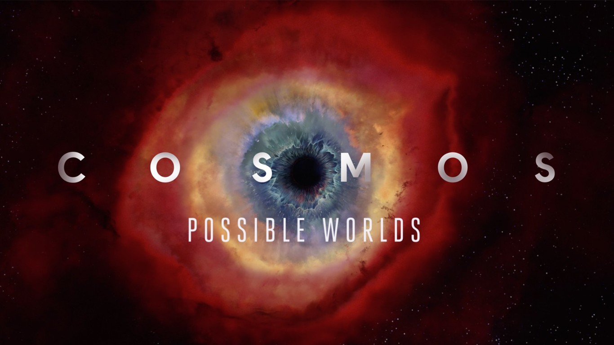
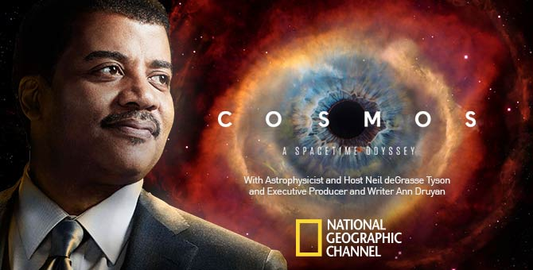
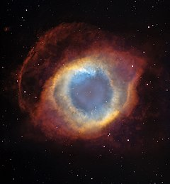

///--- Cosmos: A Spacetime Odyssey ---/// ʕ•́ᴥ•̀ʔっ♡
Cosmos: Una odisea de tiempo y espacio (en inglés, Cosmos: A Spacetime Odyssey1) es una serie documental para televisión de 2014. Es continuación de Cosmos: un viaje personal (1980), que fuera presentada por Carl Sagan1 y cuya emisión a través de la PBS se considera un hito en la historia de los documentales científicos. Su presentador es el astrofísico Neil deGrasse Tyson,2 quien fue inspirado por Sagan al conocerlo en su juventud. Algunos de sus productores ejecutivos son Seth MacFarlane, cuya influencia e inversión financiera fue fundamental para su realización, y Ann Druyan, viuda de Sagan y cocreadora del programa original.3 La banda sonora proviene de Alan Silvestri.4 En Latinoamérica cuenta con la voz de Fernando Solís Lara,5 y en España, Carlos Sobera introdujo los episodios para su emisión en Mega.
La serie sigue libremente el mismo formato de trece capítulos y enfoque narrativo de su predecesora, renovando algunos de sus elementos como "la nave de la imaginación" y presentando los nuevos descubrimientos desde 1980 junto a un uso extensivo de gráficos generados por computadora y relatos históricos mediante animación tradicional.
Se estrenó el 9 de marzo de 20147 simultanéamente en diez canales del Fox Networks Group: Fox, FX, FXX, FXM, Fox Sports 1, Fox Sports 2, Nat Geo, Nat Geo Mundo, Nat Geo Wild y Fox Life. Los 12 episodios restantes se transmiten por Fox y Nat Geo, que los repitió al día siguiente con contenido detrás de cámara.8 De acuerdo a Fox Networks, esta fue la primera vez en que un programa debuta en una transmisión global y simultánea en sus canales.9 A través de los capítulos regionales de Nat Geo se transmitió en 181 países10 y 45 idiomas.11 La serie concluyó el 8 de junio de 2014 y dos días después se publicó en DVD y Blu-Ray.12

///--- Origen ---/// (>‿◠)✌
La serie documental de 13 episodios Cosmos: un viaje personal se estrenó en 1980 por PBS y fue presentada por Carl Sagan. Se ha considerado altamente significativo desde su emisión. Dave Itzkoff de The New York Times lo describió como "un punto de inflexión para la televisión científica".15 El programa ha sido visto al menos por 400 millones de personas a lo largo de 60 países,15 y permaneció como el programa mejor calificado del canal hasta el documental de 1990 The Civil War.16
Después de la muerte de Sagan en 1996, su viuda y cocreadora del Cosmos original, Ann Druyan, junto a Steve Soter, quien fue su productor, y el astrofísico Neil deGrasse Tyson buscaron crear una nueva versión que apuntara a una audiencia tan amplia como fuese posible y no solo a aquellos interesados en las ciencias. Habían luchado por varios años contra renuentes canales de comunicación, quienes cuestionaban que atrajese al público masivo.15

///--- Concepto ---/// ≧◠‿◠≦✌
Tyson guía a los espectadores a través de diferentes aspectos de la realidad mediante la revelación de la Ciencia y la nave de la imaginación. Argumentan los autores que han trabajado en algo similar a la serie original con nuevos efectos especiales al gusto del día. Así, según MacFarlane, la nueva nave espacial fue diseñada para ser atemporal y muy simple, usando el techo para eventos futuros y el piso para aquellos del pasado, permitiendo a Tyson, como animador llevar al espectador a los lugares que describe.17 Los elementos destacados fueron creados por un equipo de animadores elegidos por MacFarlane. Kara Vallow produjo y desarrolló la animación junto al estudio Six Point Harness.18 Varios actores conocidos han colaborado poniendo voz a los personajes animados, tales como Richard Gere, Kirsten Dunst, Patrick Stewart, Amanda Seyfried, Marlee Matlin, Cary Elwes, Alexander Siddig o Seth MacFarlane.
